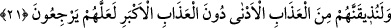
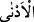
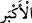
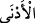
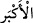

21. En büyük azaptan önce, onlara mutlaka en yakın azaptan tattıracağız; olur ki
(îmâna) dönerler.
“En büyük azaptan önce, onlara” Mekke halkına “mutlaka en yakın azabdan
tattıracağız.”
“En yakın azab”, dünyâ azabıdır. Onlar, bir dönem Nebî (a.s.)’a eziyette çok ileri
gitmişlerdi de Efendimiz (s.a.) de kendilerine bedduâ etmişti. İşte bu duâ sebebiyle,
yedi yıl kıtlığa mübtelâ oldular. Öyle ki açlıktan leşleri, ölmüş hayvan derilerini,
yanmış kemikleri ve hatta deve tüyleri ile kanı karıştırıp ateşte kızartarak yemek
zorunda kaldılar. Açlık öyle bir seviyeye ulaşmıştı ki, onlardan biri açlıktan kendisi ile
gök arasını duman gibi görmeye başladı. Kezâ onlar için bir türlü azâb olan dünyânın
musîbetlerine ve imtihanlarına maruz kaldılar. Nihâyet onların durumu, Bedir
Gazvesi’inde öldürülmeye ve esir alınmaya kadar vardı.
“En büyük azâb” âhiret azâbıdır.
Keşfü’l-esrâr’da ve daha sonra onu takip eden Kâşifî de tefsîrinde şöyle der: “Ateşte
ebedî kalınacak büyük azaptan daha aşağı.”
Lübâb’da Tefsîr-i Nakkâş’tan şöyle nakledilmiştir: “__WORD__ lâfzı, fiyatın yüksek, pahâli
olmasıdır. “__WORD__ lâfzı ise mehdînin tamamen suyunu almış parlak kılıcı ile çıkması
demektir. “__WORD__ ve “__WORD__ lâfızlarından muradın dünyâda hor ve hakir olmak, âhirette
de mahcubiyetten tepetaklak olmak olduğu veyahut dünyâda günaha düşmek ve âhirette
Hakk’a yakınlık dergâhından uzak kalmak olduğu da söylenmiştir.
O’na vuslattan uzak kalmak, en büyük azaptır.
Ayrılığı yakıcı ateşi, bütün azaplardan beterdir.
Baklî’nin Hakâik’ında der ki: “En yakın azab”, ma‘rifetten mahrûmiyettir. “En büyük
azab” ise ma‘rûf olan/herkesin ve her şeyin bilip tanıdığı Hak Teâlâ’yı müşâhededen
perdelenmektir.”
Ebü’l-Hasan Verrâk der ki: “En yakın azab”, dünyâya karşı hırslı olmaktır. “En
büyük azab” ise bu hırs karşılığında dûçâr olunacak azabdır.
“Olur ki” onlardan geri kalanlar ve azâbı görenler “(îmâna) dönerler.” Küfür ve
ma‘sıyetlerden tevbe ederler.
et-Te’vîlâtü’n-Necmiyye’de der ki: “Tâliblere ve sâliklere işâret etmektedir ki sülûk
esnâsında onlardan biri işin içine karışan ucüb/kendini beğenme, yorulma ve bıkma,
(ibâdetlerinin) kabul olduğunu zannına kapılma ve bununla aldanma gibi sebeplerle
vakfe (sülûkün durması) meydana gelirse veya dünyâdan, dünyânın süslerinden ve
şehvetlerinden bir şeye azıcık bir iltifat sebebiyle onun için fetret hâli ârız olursa, Allah
onu nefsinde veya malında olan bir belâ ile ya da âile, akraba ve sevdiklerinde olan bir